Windows Phone 8: C# Plugins
In this guide we will create a Unity Plugin for Windows Phone which uses Windows Phone specific API to get device name. On other devices such information is not available, so we will return "Not Windows Phone" string instead.
To create a plugin specific to Windows Phone, create a new solution in Visual Studio. Select Other Project Types -> Visual Studio Solutions -> Blank Solution:
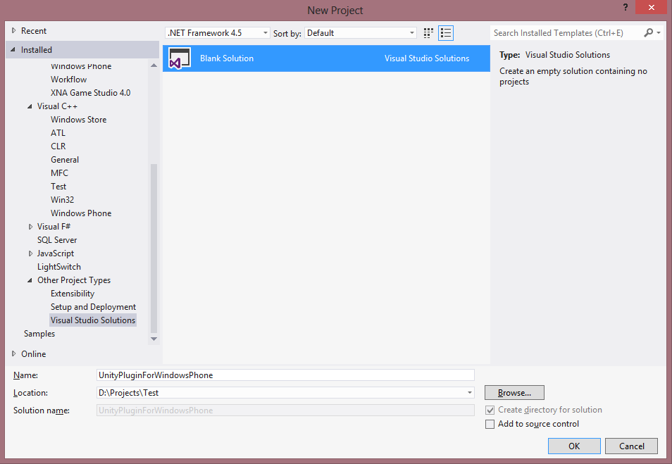
Next, you'll need to add two projects, one for Windows Phone (real DLL) and one for Editor (fake DLL). In Solution Explorer, right click the newly created solution and select add project:
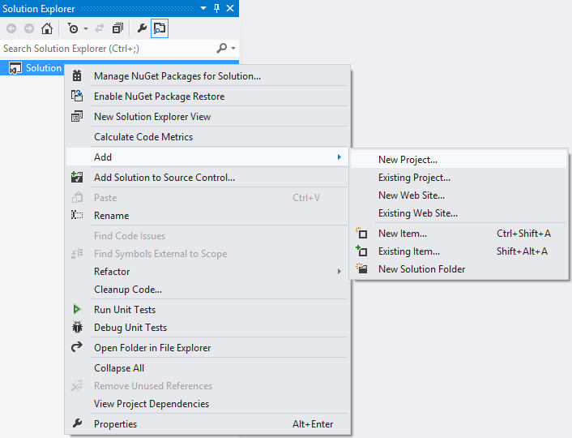
Select Windows Phone Class Library template. We'll name the project "RealDLL" for clarity sakes:
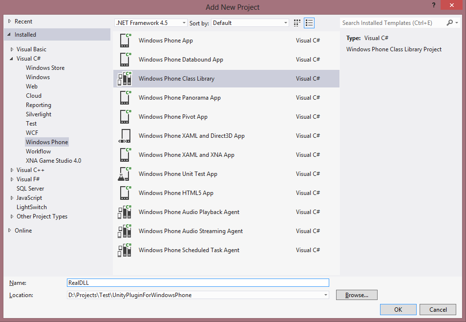
When prompt, make sure to select Windows Phone 8.0 OS, rather than Windows Phone 7.1:
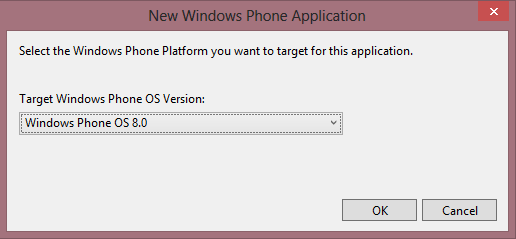
Once the project is created, go to its properties and change Assembly name and Default namespace to your solution name:
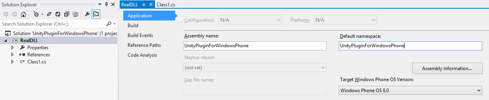
Next, open file "Class1.cs" and change its namespace to solution name as well:
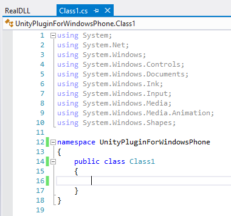
Add Windows Phone specific functionally to the project. In this example, we'll make a property to get device name:
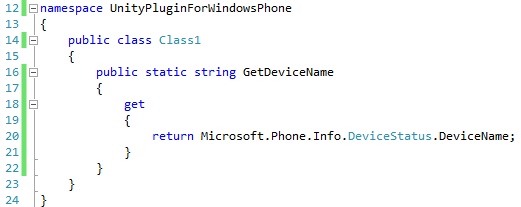
Build the Solution. 2 files should be created:
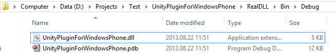
Alright, the first part is done. Now we need to create the fake DLL for the editor to use. Create a new project again, and this time, select Windows -> Class Library template. Make sure to change the .NET framework to 3.5!
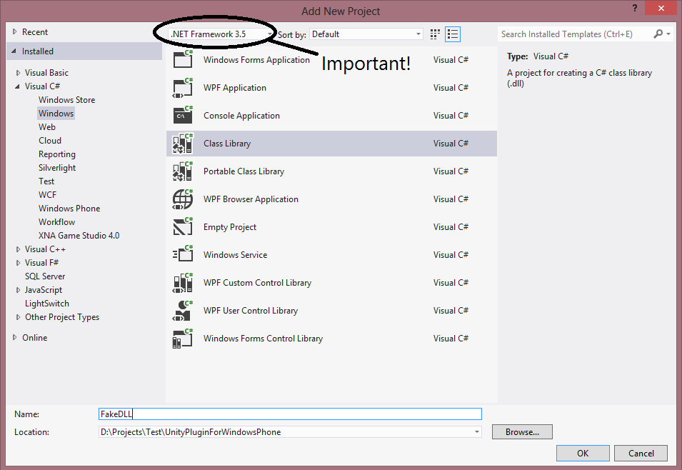
Once again, change Assembly name and Default namespace in project properties and change the namespace of the class. Next, implement identical non-private methods/fields/properties as in the real DLL:
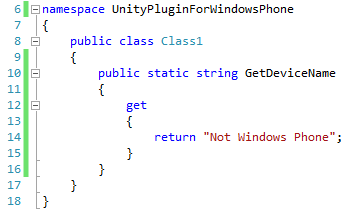
Build the solution. 2 more files should be created:
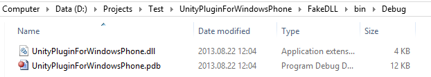
That's it! The plugins were created. To import them to your Unity project, copy the FakeDLL to <UnityProjectPath>/Assets/Plugins:
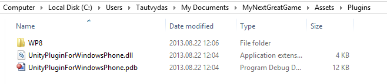
And the RealDLL to <UnityProjectPath>/Assets/Plugins/WP8:
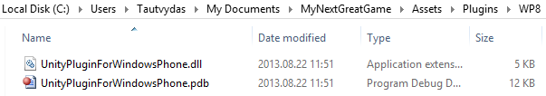
Finally, write a script to make use of the new plugin (and don't forget to attach it to the camera!):
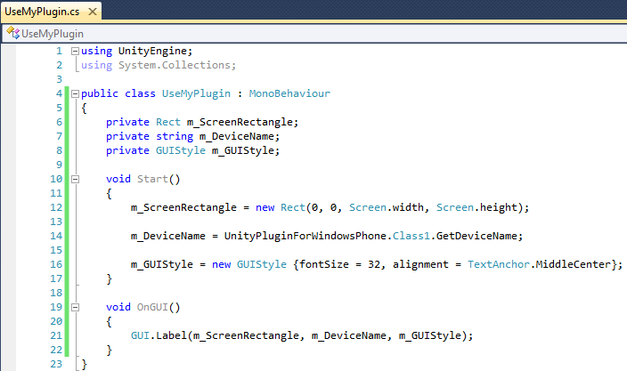
Results:
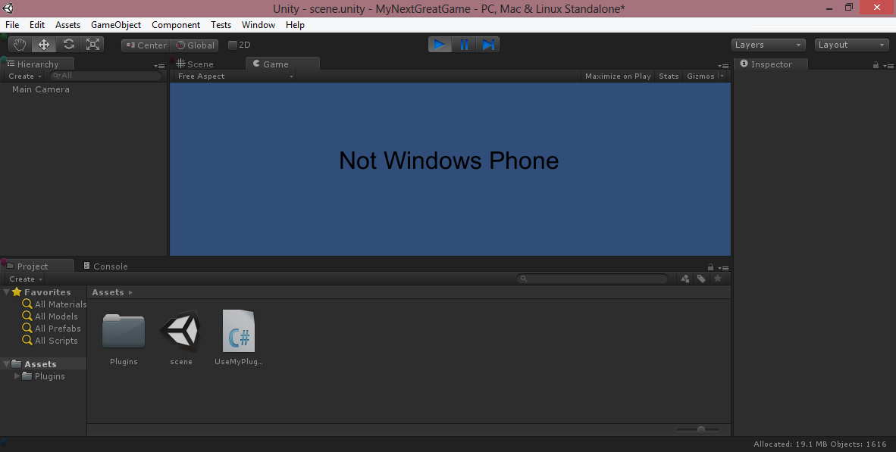
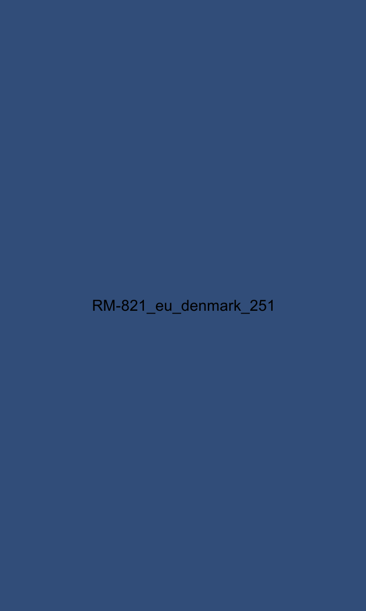